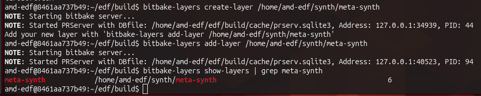

EDF 101.
I am learning AMD's Embedded Development Framework by moving my working KV260 synthesizer from the Ubuntu 24.04 image onto a Linux image I build myself.
Goal
Build an EDF Linux image for the KV260 that can run my existing synth_live program, receive the FC25 keyboard through ALSA and start the synthesizer automatically at boot. The current synthesizer already works end to end on AMD's Ubuntu 24.04 image. Today is about moving that known-good system onto a bespoke image without losing the working audio path.
Methodology
This is the second day of my first encounter with building embedded Linux. Yesterday I built a PetaLinux image for the first time. Today I am going to use the EDF tools myself, with an agent alongside me to search the documentation, inspect the existing synthesizer and its Vivado design, explain unfamiliar parts of the flow, and keep this page current as the experiment unfolds.
The division of labour matters. I will run the embedded Linux tools and make the decisions; the agent can use the project files, AMD documentation, Knowledgetrees and the Vivado MCP integration to shorten the research and feedback loops. This note will be revised throughout the session from what actually happens. It is not a set of instructions written in advance, and it does not yet have a result.
Starting point
The input is not a toy hello-world design. The existing system is a sixteen-voice synthesizer whose programmable logic generates the audio. A C program on Linux reads the FC25 as an ALSA Sequencer source and writes voice and control state into the PL register map. Two systemd services load the hardware, wait for the named MIDI device, start synth_live and recover when the keyboard disconnects and returns.
I know the application works on the board. What I do not yet know is how EDF wants me to express that complete runtime: the application and libasound, the ALSA tools and kernel support, the services, the FPGA payload and its device-tree overlay. I also do not yet know which parts of the working Ubuntu deployment can carry across unchanged.
Choosing the build environment
The first choice was whether to build directly on my Ubuntu 24.04 workstation or inside AMD's EDF build container. EDF 25.11 corresponds to Vivado 2025.2, which is the version used for the synthesizer hardware. That correspondence does not imply identical host support: Vivado 2025.2 supports Ubuntu 24.04, while AMD lists Ubuntu 22.04 releases as the validated hosts for the EDF 25.11 build.
I questioned whether this was merely the familiar Ubuntu distinction between Bash and dash. It was not. Ubuntu 22.04 also uses dash for /bin/sh; EDF's instruction is to run its setup from Bash. I also already had a Yocto tree from yesterday's PetaLinux build. The agent inspected it and found Poky, BitBake and the AMD layers, but not meta-amd-edf or edf-init-build-env. It is PetaLinux-managed build state, not an EDF checkout.
I was dubious about what boundary a container would introduce. The agent briefly suggested that a native build might expose more of the machinery, but doing that by deliberately stepping outside AMD's tested configuration did not strike me as a useful learning opportunity. The container does not contain the work itself: we will mount an ordinary host directory into it, so the source, recipes, caches and outputs remain files I can inspect. It supplies the known build-host userspace around them.
podman pull docker.io/xilinx/edf:ubuntu2204-25.11The image pulled successfully. Its digest is e4a967c561b84e9899bc5b867b2142c5ddabe383ebcb8484fb32fd7c71db20d2. Nothing else was installed on the host.
I created ~/Projects/edf-synth on the host and mounted it at /home/amd-edf/edf inside a disposable container. The distinction became concrete when the prompt changed from david@DDRiver:~$ to amd-edf@fda0b922a1c6:~/edf$: the shell and build tools belong to the container, while anything written under the current directory belongs to the host workspace and will survive when the container is removed.
podman run --rm -it \
--name edf-synth-build \
-v ~/Projects/edf-synth:/home/amd-edf/edf \
-w /home/amd-edf/edf \
docker.io/xilinx/edf:ubuntu2204-25.11The agent then asked me to verify the working directory and that repo was available. The first line of the result was <repo not installed>. Rofl. The executable I had just run was telling me that Repo was not installed.
The explanation requires three uses of almost the same word. There are the many Git repositories that make up EDF; there is Google's tool named Repo, which coordinates them; and there is a small Repo launcher at /usr/bin/repo which downloads the rest of the Repo tool into .repo/repo when a workspace is initialized. The launcher was installed and reported version 2.17. Its workspace-local implementation was not, hence <repo not installed>. This did not mean that the directory was missing some generic repository. Who comes up with this stuff, honestly.
The same output reported Git 2.34.1, Python 3.10.12 and the host kernel visible through the container. Containers supply a separate userspace, but share the host kernel; this is not a virtual machine booting another kernel.
This was an incredibly bizarre experience to be documenting in real time with an AI. Somehow I was a voluntary zoo animal, the key to whose cage was /quit. Anyway, it was time to step face first on a rake.
repo init \
-u https://github.com/Xilinx/yocto-manifests.git \
-b refs/tags/amd-edf-rel-v25.11 \
-m default-edf.xml
fatal: cannot make .repo directory: Permission deniedThe mount was read-write, and both my host account and the container's amd-edf account displayed UID 1000. They were nevertheless different identities because rootless Podman maps container IDs through a user namespace. From inside the container the mounted host directory appeared to belong to root, with no write permission for amd-edf. The container boundary had introduced its first real effect before EDF had created a single file.
I left the disposable container and started another one with --userns=keep-id, preserving my host identity across the boundary. This time the test was conclusive.
david@DDRiver:~$ podman run --rm -it \
--name edf-synth-build \
--userns=keep-id \
-v ~/Projects/edf-synth:/home/amd-edf/edf \
-w /home/amd-edf/edf \
docker.io/xilinx/edf:ubuntu2204-25.11
amd-edf@56766632b14c:~/edf$ touch purple
amd-edf@56766632b14c:~/edf$ rm purpleWith the mount writable, I tried repo init again. This prompted another reasonable question: what is Google doing here? Repo was made by Google to manage Android's source tree, which is itself spread over many Git repositories. AMD uses the same tool and its manifest format to pin the collection of Yocto and AMD repositories that make up an EDF release.
This attempt partly succeeded. The launcher contacted Google's Gerrit server, downloaded Repo's full implementation into the persistent .repo/repo directory, updated its signing keys and fetched AMD's manifest. It then warned that a newer Repo could not replace the read-only /usr/bin/repo launcher. That warning looked ominous but was not the failure: the downloaded implementation was already running from the workspace.
The actual failure came afterwards. The container did not inherit my Git name and email, and Repo refused to finish initialization without a committer identity:
git_command.GitCommandError: 'var GIT_COMMITTER_IDENT' on manifests failed
stderr: Committer identity unknown
*** Please tell me who you are.So the workspace was no longer empty, but it was only partially initialized. The source layers had still not been synchronized. I configured my Git identity inside the container and ran the command again:
git config --global user.email "david.farrell@avnet.com"
git config --global user.name "David Farrell"
repo init \
-u https://github.com/Xilinx/yocto-manifests.git \
-b refs/tags/amd-edf-rel-v25.11 \
-m default-edf.xmlRepo again warned that its older launcher could not update itself, then reused the implementation it had already downloaded. It asked whether I wanted colour output and finally reported repo has been initialized in /home/amd-edf/edf. The persistent workspace now contained the EDF 25.11 manifest machinery under .repo, but still none of the source repositories named by that manifest.
The next command would fetch nineteen repositories. I asked how long it might take. The agent estimated five to twenty minutes and suggested timing it. It took 40.410 seconds.
time repo sync
Syncing: 100% (19/19), done in 40.410s
Finalizing sync state...
repo sync has finished successfully.The host workspace was now 778 MB and contained edf-init-build-env plus nineteen source directories, including Poky, meta-amd-edf, meta-kria, meta-xilinx and meta-openembedded. This was source acquisition, not an image build.
Before replacing the container again, I wrote my work Git identity into a configuration file in the persistent EDF workspace. The next container received that file through GIT_CONFIG_GLOBAL and mounted both the EDF workspace and the synthesizer repository. Sourcing edf-init-build-env again restored the existing build environment rather than recreating it. The disposable shell now had durable build state on one side and read-write access to the application I was porting on the other.
I sourced edf-init-build-env. Because this was a new workspace, EDF created build/conf/local.conf and build/conf/bblayers.conf from its templates, then printed the machines and image recipes it knew how to build. The generated layer configuration named the AMD and upstream layers explicitly. The local configuration selected the amd-edf distribution and AMD's 25.11 source and shared-state mirrors, but deliberately left the hardware at the fallback qemuarm64 until I chose a target.
The output also exposed a distinction I had not yet met. EDF listed common CPU machines, such as amd-cortexa53-mali-common, for building reusable disk images, and board machines for building boot firmware. For Kria it offered k26-smk-sdt with the kria-qspi recipe. The checked-out meta-kria layer also contained the more specific k26-smk-kv-sdt machine for the KV260 carrier. Before launching a long build, we stopped to determine which of those artifacts belonged together and where my custom PL design entered the flow.
The agent next described bitbake -e as configuration parsing only, not a build. This was technically true in the least useful sense. On its first run BitBake still had to load every configured layer, parse thousands of recipes and resolve their overrides and dependencies. The fans immediately supplied the missing operational definition.
DISTRO="amd-edf"
IMAGE_FEATURES="hwcodecs package-management splash ssh-server-openssh"
IMAGE_INSTALL="packagegroup-core-boot packagegroup-kria kernel-modules ..."
MACHINE="kria-zynqmp-generic"The resolved configuration confirmed that this target was the generic Kria root filesystem, using the EDF distribution. It included package management, OpenSSH, all kernel modules and a Kria package group. That last name was still an abstraction: it did not prove that the particular ALSA library and aconnect program needed by the synthesizer would be present in the finished image.
Expanding packagegroup-kria showed a broad development image: hardware utilities, networking tools, debugging tools, Jupyter, Python packages, xmutil and support packages for both K24 and K26 starter kits. It did not name the ALSA library or aconnect. Those were available in the Yocto layers, but the synthesizer would need to request them rather than inherit them accidentally.
I then created meta-synth, the first EDF-specific source added to the synthesizer repository:
bitbake-layers create-layer /home/amd-edf/synth/meta-synth
NOTE: Starting bitbake server...
NOTE: Started PRServer with DBfile: /home/amd-edf/edf/build/cache/prserv.sqlite3
Add your new layer with 'bitbake-layers add-layer /home/amd-edf/synth/meta-synth'The generated layer was deliberately boring: a layer configuration, an MIT licence, a placeholder README and an example recipe. It was not active in the build yet. I added it, then the verification printed its name, path and a bare 6. Six what?

grep had removed the priority heading and stranded the 6 at the far edge.Unfiltered, bitbake-layers show-layers showed 41 active layers and made the meaning completely ordinary. Layer priority is relevant when layers offer competing recipes, but otherwise inconsequential for our uniquely named synth package. I found this quite amusing.
A Yocto layer is not a layer of the finished filesystem. It is a modular directory of build metadata: recipes describing how to build and package software, configuration, patches and related files. Adding meta-synth made its metadata visible to BitBake; it did not put anything into the image. A recipe will produce the synth package, and an image recipe will have to select that package before its files appear in the root filesystem.
The generated example provided a small test of that distinction. After the new layer changed the metadata configuration, BitBake discarded its previous parse cache, parsed 6,185 recipes and found one matching recipe:
bitbake-layers show-recipes example
Parsing of 6185 .bb files complete (0 cached, 6185 parsed).
8735 targets, 1666 skipped, 29 masked, 0 errors.
=== Matching recipes: ===
example:
meta-synth 0.1The layer existed, the build knew about it, and its otherwise useless example recipe was visible. It was ready to be replaced with the real application metadata.
The agent then made its own mistake in the division of labour. After changing the layer, it ran another BitBake recipe-discovery command inside my container without warning me. The machine abruptly went into 98%-o-mode. The command completed without errors and found synth-live in meta-synth, but this was supposed to be my hands-on flow, not an invisible second operator reaching into the same terminal environment. We corrected that boundary too.
When I started the first real package build, BitBake printed an ERROR saying that it could not fetch a cached glibc do_packagedata_setscene result, then carried on working. This was familiar from the previous day's PetaLinux build. A setscene task is an attempt to restore completed work from the shared-state cache; if the object is missing, BitBake can fall back to performing the real task. The word ERROR describes the cache fetch, not necessarily the fate of the build. Once again, the final task summary would decide that.
There was one complication in treating the synthesizer as an ordinary boot service. The FC25 likes to power itself off after inactivity. The current system has a separate watcher which notices the ALSA source disappear and, when it returns, restarts synth.service so that synth_live discovers the keyboard's new client number and subscribes again.
That behaviour still belongs in the EDF image, but it clarified the service boundary. If EDF's firmware service loads the packaged PL design once during boot, restarting synth.service after the keyboard wakes should restart only the Linux MIDI process. It should not unload and reload the FPGA as the current Ubuntu service does. The watcher remains; the old synth-prepare-pl pre-start action does not.
The first attempt to build the application recipe did not reach the compiler. BitBake warned that kria-zynqmp-generic was intended to be included by other machines rather than used directly, then rejected a runtime dependency named python3-subprocess. Both came from the agent's reading of the metadata rather than from EDF's example commands. In this release subprocess.py is already part of python3-core; there is no separately produced package by that name. I removed the invented dependency and changed the package-build target to the supported common K26 CPU machine, amd-cortexa53-mali-common.
Your organization or enterprise has exceeded its Copilot budget. Contact your admin to resume usage.Huh. That's weird. My usage only shows 40%. The build succeeded:
Checking sstate mirror object availability: 100% |####################################################| Time: 0:02:09
Sstate summary: Wanted 638 Local 0 Mirrors 622 Missed 16 Current 300 (97% match, 98% complete)
NOTE: Executing Tasks
NOTE: Tasks Summary: Attempted 2600 tasks of which 2581 didn't need to be rerun and all succeeded.
real 2m32.613s
user 0m0.757s
sys 0m0.103sAlthough bitbake is now inexplicably talking like a snake. Well, I am going to call it a day and resume tomorrow, as I need to make dinner & get some rest. Should hopefully be able to finish the build tomorrow.